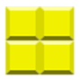
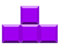
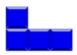
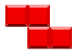
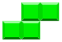

U igri tetris oblici padaju i cilj je da se sto duze vreme ne nagomilaju do vrha, ukoliko se to desi igra je zavrsena.
Igrac moze da pomera oblike levo desno kao i da ih rotira odgovarajucim strlicama.
Kada oblik dodirne neki drugi oblik ili se spusti do dna ostaje tu i ne moze se vise pomerati.
Kada se jedan ceo red popuni blokovima, red se brise i svi blokovi iznad se spustaju za jedno mesto dole.
Postoji nekoliko vrsta oblika. I moguce je izabrati oblike koje igrac zeli da ima u svojoj igri.
Postoje i 3 tezine od kojih zavisi pocetna brzina padanja oblika.
Igru je moguce pauzirati i resetovati u bilo kom trenutku.
Korisniku su vidljivi poeni koje je ostvario nivo i pod nivo na kome, od kojih direktno zavisi brzina padanja oblika, kao i sledeci oblik koji dolazi.
Nakon zavrsene igre korisnik moze uneti svoje ime kako bi sacuvao rezultat u listi najboljih rezultata.
Komande:
|  |  | |
|  | ||
|  |  |